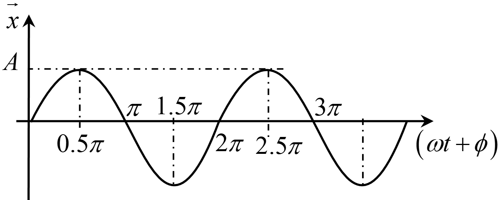

To study and understand Simple Harmonic Motion (SHM), strong grasp of following
mathematical concepts are required:
Trigonometry
Along with trigonometric ratios of standard angles, following results
must be remembered:
The angle \(180^\circ\) is same as \(\pi\)
radians. For any angle \(x^\circ\) to convert it in \(\theta\) rad,
\(\qquad\theta=\pi\times\frac{x}{180}\)
Maximum value of \(a\sin(\theta)\) is \(a\).
Maximum value of \(b\cos(\theta)\) is \(b\). But maximum value of
\(a\sin(\theta)+b\cos(\theta)\) is \(\sqrt{a^2+b^2}\)
To convert a \(\sin\) function to \(\cos\)
function we use :
\(\quad\sin(\frac{\pi}{2}-\theta)=\cos(\theta)\)
Effect of addition of following angles in \(\sin\) and \(\cos\)
function:
In reference to equation below for displacement of particle in SHM:
\(\qquad x=A\sin\left(\omega t + \phi\right)\)[Consider it equation
1]
we can understand meaning of each
term in following steps:
Amplitude \((A)\) Amplitude of a
particle in its SHM is the maximum displacement of the particle from its
mean position. In the equation 1 it is represented by \(A\).
Time period \((T)\)
The time taken by
the particle to complete one full oscillation in SHM is called time
period
of SHM.
If you understood the meaning of time period, tell me: If time
period of a SHM is \(T\), what is time
taken to reach from mean position to extreme position?
\(T/2\)
\(T/4\)
Frequency \((f)\)
Frequency of any periodic motion is defined as number of cycles occurring
per unit time. If \(f\) is the frequency and \(T\) represents the time
period, then:
\(\qquad f={}^{1}/{}_{T}\)
Suppose, frequency of SHM is increase. It means that SHM will occur
:
slowly
more quickly
Phase\((\Phi)\) The phase represents the
state of motion of the particle during its SHM. In the equation 1,
the argument \(\left(\omega t + \phi\right)\) is called the phase of SHM.
The phase of SHM represents state of the particle during its motion. Using a
few basic properties of sinusoidal expression, we can understand the
relation between displacement and the phase and draw the following graph:

Graph: Variation of
displacement with phase. For different values of phase, state of particle is enlisted in
following table:
Phase
Motion
\(0\)
Particle is at mean position, moving towards positive
extreme.
\(\frac{\pi}{2}\)
Particle is at positive extreme position and at rest.
\(\pi\)
Particle is at mean position, moving towards negative
extreme.
\(\frac{3\pi}{2}\)
Particle is at negative extreme position and at rest.
\(2\pi\)
Particle is at mean position, moving towards positive
extreme.
The values of phase at various positions of particle under SHM is shown
in following animation:
Animation: Phase at
various positions of SHM.
It is clear from the above graph, table and animation that there occurs a
phase change of \(2\pi\) in one complete cycle of SHM. Thus, after a phase
of \(2\pi\), the motion of the particle repeats itself. In other words, the
state of motion of particle at phase \(2\pi +\theta\) is the same as that of
at
phase \(\theta\).
What is velocity of particle, when phase of the SHM becomes
\(\frac{3\pi}{2}\)
zero
its maximum
If the phase of SHM is \(\frac{\pi}{2}\) , what is the state of the
particle?
Particle is at rest.
Particle is moving.
If a particle is at positive extreme during its SHM, its
acceleration is along:
positive direction.
negative direction.
Angular frequency \((\omega)\)
It represents the rate at which the phase is changing. In the above
equation, the term \(\omega\) represents the angular frequency. This is
described mathematically below:
Thus in a time \(\Delta t\), the change in phase is \(\omega(\Delta
t)\).
Since, there occurs a change of \(2\pi\) in phase of particle in one
time period (\(T\))
\(\qquad \omega (T)=2\pi\)
\(\quad\Rightarrow T=\frac{2\pi}{\omega}\)
Suppose, angular frequency of a particle performing SHM is \(2
\text{rad/s}\). What is the time taken by particle to
change its phase from \(\frac{\pi}{4}\) to \(\frac{3\pi}{4}\)?
One quarter of time period.
Half of time period.
One time period.
Initial phase\((\phi)\) When a particle
starts its SHM, the initial state of particle depends on initial phase. It
is determined by setting the value of time \(t\) as \(0\) in the equation
for phase. In the above equation \(\phi\) represents initial phase. Thus
For different values of initial phase, the particle will have different
starting position in its SHM. This is shown in following table:
Initial phase
Starting position
\(0\)
Mean position, moving towards positive extreme.
\(\frac{\pi}{2}\)
Positive extreme position.
\(\pi\)
Mean position, moving towards negative extreme.
\(\frac{3\pi}{2}\)
Negative extreme position.
Suppose initial phase of the particle is \(\frac{5\pi}{6}\), where
is the particle initially?
At mean position.
At extreme position.
Somewhere between mean and extreme.
Activity #03
Visualising
initial phase
Feed your curiosity of initial phase in
simple harmonic motion with our immersive physics
simulation.
In dynamics of SHM, we study the forces acting in SHM and their relation with time
period and frequency of SHM. For a particle to perform SHM about a mean position,
there must be a net force acting on the particle when it gets displaced from its
mean position. Such force is known as restoring force. In SHM, restoring force
causes
the particle to again reach its mean position. Hence the restoring force is always
directed towards mean position.
This can easily be experienced from following activity:
Activity #04
Make your own SHM
Get ready to take control and unleash the power of
simple harmonic motion! With our physics simulation, you can
become
the master of the oscillator by dragging the block and starting the
SHM yourself. Give it a try and
experience the thrill of hands-on learning!.
Consider a particle of mass \(m\) performing SHM. The force \(\vec{F}\)
depends on displacement from mean position \(\vec{x}\) as:
\(\qquad \vec{F}=-k \,\vec{x}\)[with \(k\) as a propotionality
constant]
Since this force is always directed towards the mean position, this force can be
considered as a restoring force for the system. A similar equation is followed by
any
system undergoing SHM.
Using Newton's second law for the particle,
\(\qquad m\,\vec{a}=-k \,\vec{x}\)[with \(\vec{a}\) as a
acceleration]
For any particle of mass \(m\) in SHM, if proportionality
constant of restoring force with negative of displacement from mean position is
\(k\), time period of SHM will be \(2\pi\sqrt{\frac{m}{k}}\). It can be observed
that if the
inertia of system increases, time period for motion increases while
if the restoring force
becomes strong then the time period decreases.